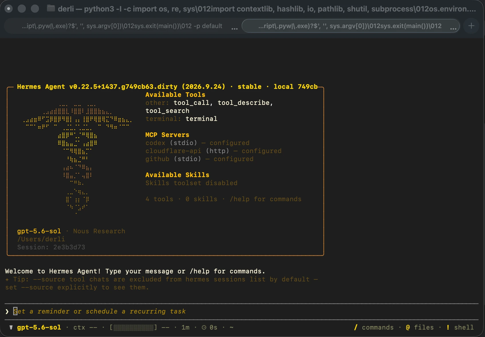

权限开好了，现在让 AI 帮你装
它只是一个文字窗口，Codex 会在这里替你打命令
Last login: Sat Nov 14 on ttys001
you@MacBook ~ % hermes --version
Windows PowerShell
PS C:\Users\you> hermes --version
Windows 里还有一个叫 Command Prompt 的黑底窗口，也是同一类文字窗口；今天用 PowerShell。
每次只给当前一步；说明用途、预期画面、失败时要复制什么
Codex，帮我在我的电脑安装 Hermes Agent。只安装命令行版本（在 Terminal／PowerShell 里用），不要安装有图形界面的版本。需要的插件也一起安装。
两大类：账号授权，或按用量计费的 API
账号／订阅授权；主要入口；适合安装、写代码、操作项目和复杂电脑任务
申请后有 3 个月免费额度；适合图片、PDF、长文件与日常多模态任务
以前比较便宜；现在费用已接近其他 AI，目前不特别推荐。约三个月前，做客服时曾推荐
编码 Agent／工具；适合重要代码、复杂排错和项目修改
成功＝看到 Hermes 的画面，可以直接打字问它；最后新开一个窗口再验证一次
PowerShell
hermes
PS C:\Users\you> hermes
⣿⣿⣿ ⣿⣿⣿ ⣿⣿⣿⣿⣿ ⣿⣿ ⣿⣿ ⣿⣿
Welcome to Hermes Agent! Type your message or /help for commands.
❯ Set a reminder or schedule a recurring task
Terminal
